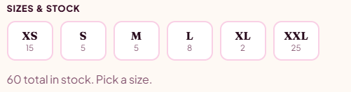
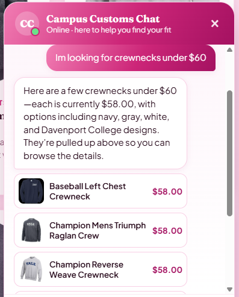
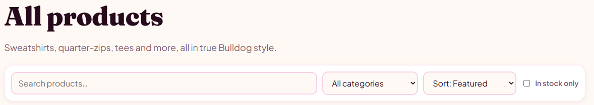

Each section below shows a screenshot from the live site (React + Vite front end,
FastAPI + PydanticAI backend) with a short note on what it demonstrates. Double-click
this file to open it in a browser; the images load from app_check_images/.
1Inventory level of an item
The product page shows live stock per size (XS–XXL) pulled from the database's
inventory table — proving the app reports real quantities, including
a low-stock size (XL: 2) and the 60-unit total, rather than invented numbers.

Caption: Per-size stock on the product page — XS 15, S 5, M 5, L 8, XL 2, XXL 25 (60 total in stock).
2Dynamic search cards after a category question
Asking the chatbot "I'm looking for crewnecks under $60" makes the PydanticAI agent search the catalogue; matching products appear as cards (image, name, price) both in the chat and on the page — proving the agent's search updates the storefront live and respects the budget filter (all $58.00).

Caption: A budget category question returns matching crewneck cards ($58.00) rendered dynamically by the agent.
3Usability feature: product page toolbar
The Products page has a search box, category filter, sort control, and an "In stock only" toggle — proving the usability toolbar lets shoppers quickly narrow 100+ products instead of scrolling one long grid.

Caption: The Products toolbar — search, category, sort, and in-stock filtering.